Level 1, older clients, teaser
Level 1, older clients, 50 min. Peak: Teaser (Seated roll back with straps)
1. Footwork7 min, Reformer

Footwork: calf stretch under the bar1 min, 3 slow holds
Legs long, heels under FB; Hold 3 breaths, lift, repeat; Soft knees if tight

Footwork: heels with magic circle2 min, x10
MC between knees; Heels par on FB, press out; Gentle squeeze whole time
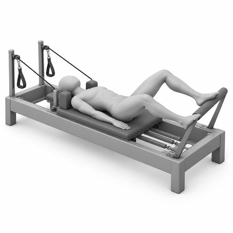
Footwork: wide, turned out2 min, x10
Heels wide, toes out (ER); Knees open over toes; Inner thighs zip on return
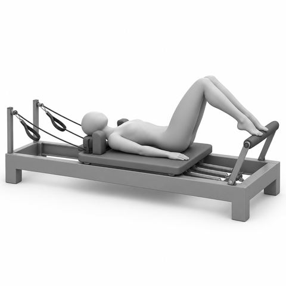
Footwork: toes, parallel2 min, x10
Balls of feet on FB, par; Heels lifted, still ankles; Press out, return slow
2. Bridging4 min, Reformer

Articulated bridge, feet on footbar2½ min, x6
Imp, peel spine up (art); Hold at top, long thighs; Roll down bone by bone
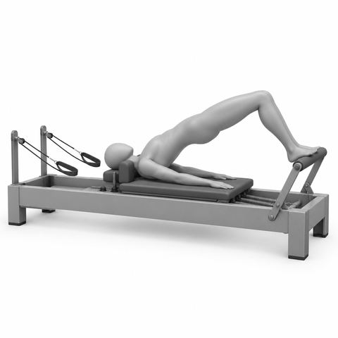
Hinge bridge, feet on footbar1½ min, x8
Arches on FB, hip wd; Lift hips as one piece; Hold, lower in one piece
3. Abs4 min, Reformer
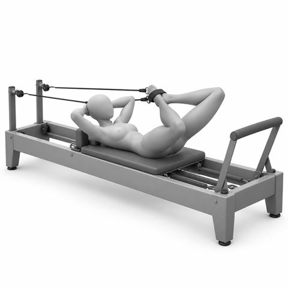
Strap abs: frog with chest lift2½ min, x8
Feet in straps, heels together; HNS, hands behind head; Press legs out, bend in
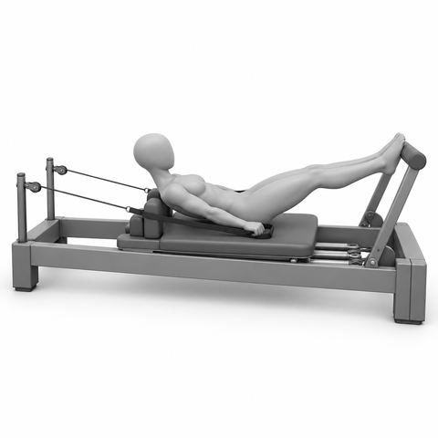
Hundred prep, feet on footbar1½ min, 50 to 100 beats
Arms in straps, feet on FB; HNS, arms press to hips; Pump arms, Inh 5, Exh 5
4. Lower body6 min, Standing (no equipment)
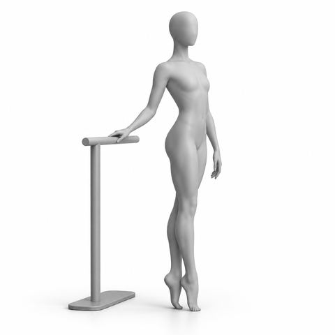
Standing heel raises2 min, x10
Stand tall, hand on frame if needed; Rise to balls of feet; Lower slow
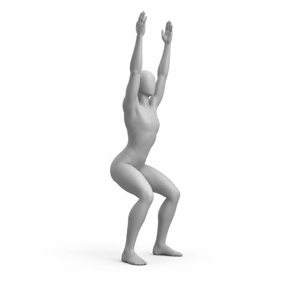
Squat with overhead reach2 min, x10
Feet hip wd, arms forward; Sit back into squat; Stand, reach arms up, ribs down
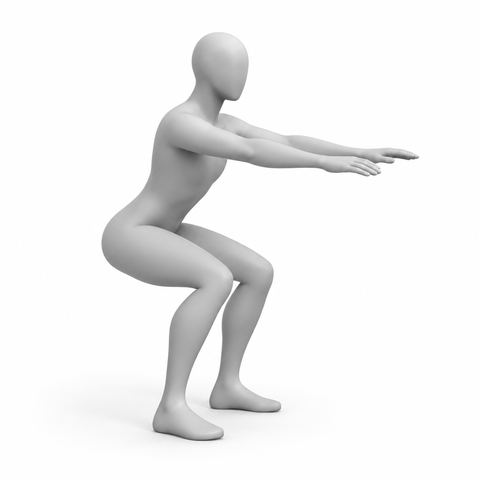
Standing squat2 min, x10
Feet hip wd, arms forward; Sit back, chest long; Stand tall, squeeze glutes
5. Upper body5 min, Standing (no equipment)
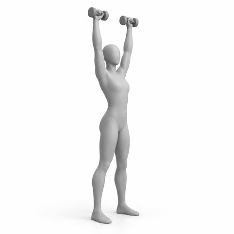
Standing overhead press with light weights1½ min, x10
Stand tall, wts at shoulders; Press up, ribs down; Lower slow
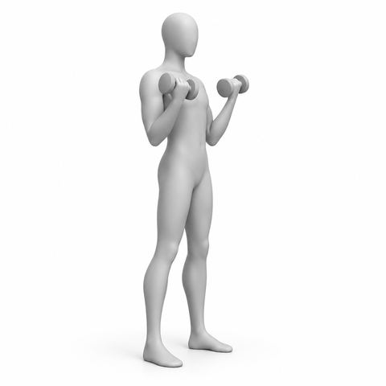
Standing biceps with light weights1½ min, x10
Stand tall, wts in hands; Elbows by ribs, curl up; Lower slow
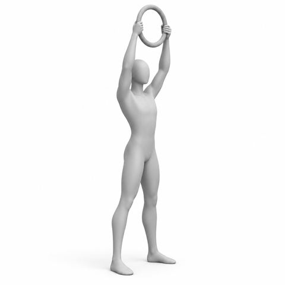
Standing magic circle press2 min, x10
Stand tall, MC at chest; Squeeze, then raise overhead; Ribs down
Second half
From minute 26. 0 equipment changes, 8 spring changes
6. Side and lateral work4 min, Reformer
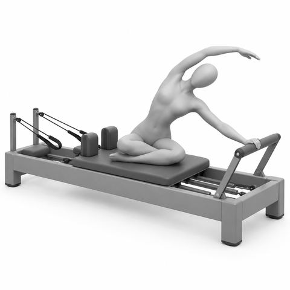
Mermaid2 min, x4 ea
Side sit, near hand on FB; Push carr out, arm overhead; Long side bend, return
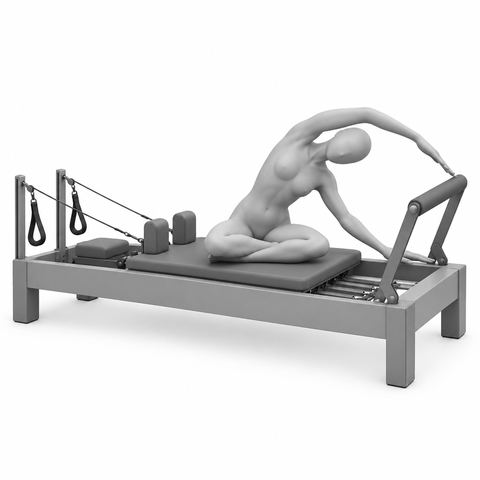
Mermaid: reach over the bar2 min, x4 ea
Side sit, both hands on FB; Side bend toward FB; Breathe into side ribs
7. Full body integration6 min, Reformer
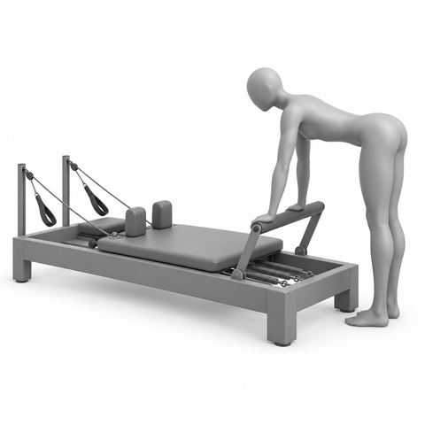
Standing hinge at the footbar1½ min, x6
Stand, hands on FB; Walk back, hinge to flat back; Long spine, soft knees
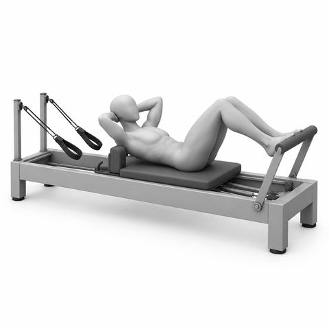
Chest lift, feet on footbar2 min, x8
Arches on FB, hands behind head; Exh, HNS curl up; Inh hold, Exh lower
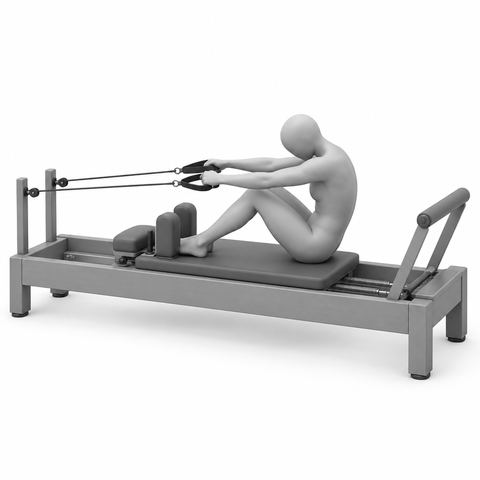
Seated roll back with straps2½ min, x6
Sit tall facing straps, hold straps; Exh, roll back to C-curve; Inh hold, Exh roll up tall
8. Prone work for the spine4 min, Reformer
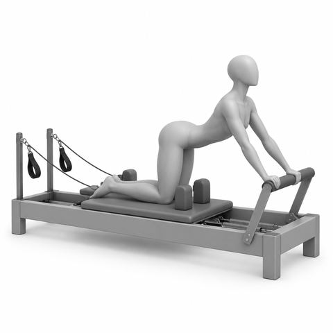
Cat and cow on the carriage2 min, x5
Hands and knees, hands on FB; Round up, then lengthen; Slow with breath
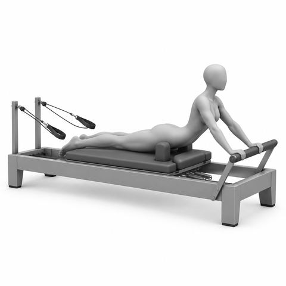
Swan prep on the carriage2 min, x6
Lie face down, hands on FB; Press bar, lift chest a little; Lower slow, long neck
9. Stretch5 min, Reformer
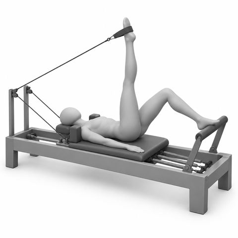
Hamstring stretch in straps1½ min, 3 breaths ea
One foot in strap, leg up; Other foot on FB; Soft knee, breathe, switch
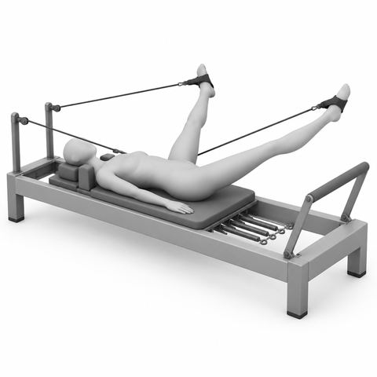
Inner thigh stretch in straps1½ min, 3 breaths
Both feet in straps; Open legs wide, hold; Close slow
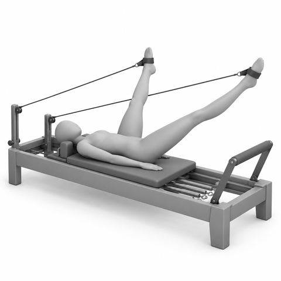
Openings in straps2 min, x8
Legs long, toes up; Open legs wide, Inh; Squeeze to close, Exh
10. Closing pull down and wind down5 min, Reformer
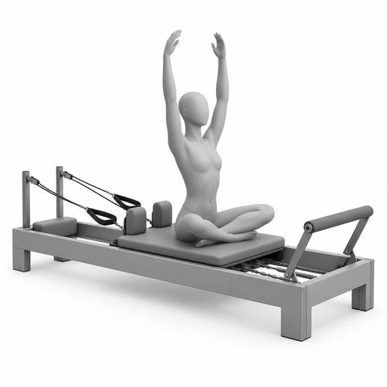
Seated breathing, arms circle1½ min, x5
Sit tall on carr; Inh, arms float up; Exh, arms float down
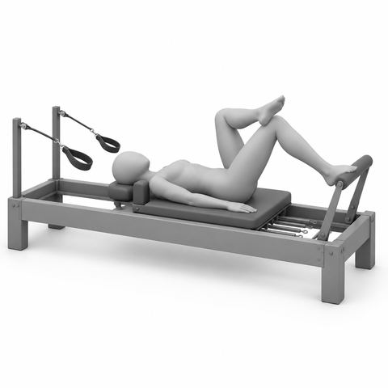
Figure 4 stretch, foot on footbar1½ min, 3 breaths ea
One foot on FB; Cross ankle over knee; Bend in a little, switch
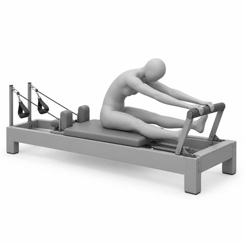
Seated spine stretch on the carriage2 min, x4
Sit tall facing FB, legs wide; Hands on FB, round forward; Stack up tall
Key. HNS Head and shoulders lifted; FB Footbar; carr Carriage; par Parallel legs; ER External rotation, turned out; ea Each side; x Repetitions, so x8 means 8 times; Inh Inhale; Exh Exhale; hip wd Hip width apart; art Articulate, one bone at a time; wts Light weights; MC Magic circle. Springs: red heavy, blue medium, yellow light. Older clients start lighter. Start at the lighter load. Add spring only if form stays clean.